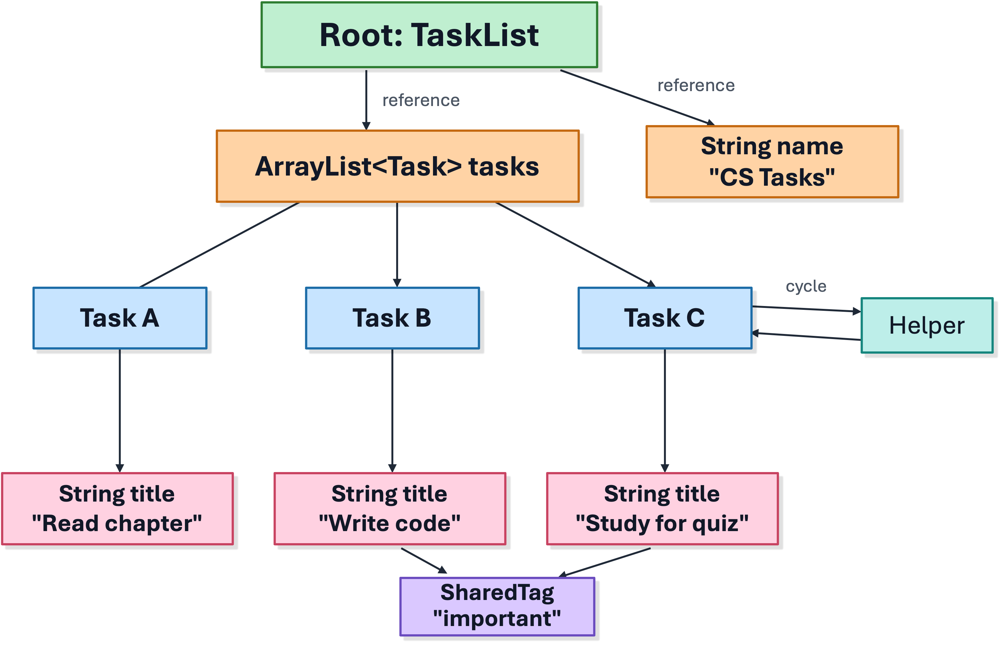

Roadmap
Decide what state should leave the running program.
Use Java object serialization for private Java snapshots.
Control saved fields with
static,transient, andserialVersionUID.Connect object serialization to modern marshalling with JSON and XML libraries.
Plan for validation, version changes, and unsafe input.
Program State Does Not Stay Forever
Objects live in memory while the program is running.
When the program closes, normal Java objects disappear.
To keep or share state, the program must convert it into another representation.
That representation may be a file, a network message, a database row, or an API request.
Two Meanings of Serialization
| Idea | What is converted? | Typical use |
|---|---|---|
| Java object serialization | A reachable Java object graph | Private Java-only snapshots |
| Marshalling | Selected data into a message format | JSON, XML, API bodies, service messages |
| Unmarshalling | A message format back into Java data | Reading files, handling API requests |
Running Example: Text Editor
Save the actual document text.
Save useful document metadata, such as a display name or save time.
Do not save live UI controls such as
TextArea.Do not save services that can be recreated, such as a spell checker.
Decide whether machine-specific context, such as a file path, belongs in the saved format.
External Data Shape
public record EditorSnapshot(
String documentText,
String sourceName,
LocalDateTime savedAt
) { }The saved shape contains only data that should cross the boundary.
The internal editor object can still contain UI state, listeners, caches, and services.
This separation makes the saved format easier to validate and change later.
Object Streams
An object stream saves connected Java objects, not just one flat object.
It keeps Java object relationships such as nested objects and shared references.
The saved bytes are Java-specific.
This is useful for learning how runtime object state is reconstructed.
Serializable Interface
import java.io.Serializable;
public final class Task implements Serializable {
private static final long serialVersionUID = 1L;
private final String title;
private boolean done;
public Task(String title) {
this.title = title;
}
}Serializableis a marker interface.It has no methods to implement.
It marks objects of this class as eligible for Java object serialization.
Object Graphs
The root is the object passed to
writeObject.Java follows fields from the root to other reachable objects.
The graph may include lists, strings, nested objects, shared objects, and cycles.
Every reachable non-transient object must be serializable.

Write an Object Stream
static void save(Path file, TaskList taskList) throws IOException {
try (ObjectOutputStream out = new ObjectOutputStream(
Files.newOutputStream(file))) {
out.writeObject(taskList);
}
}ObjectOutputStreamwrites object-stream bytes.The object passed to
writeObjectis the root of the saved graph.The
try-with-resources block closes the stream automatically.
Read an Object Stream
static TaskList load(Path file)
throws IOException, ClassNotFoundException {
try (ObjectInputStream in = new ObjectInputStream(
Files.newInputStream(file))) {
Object value = in.readObject();
if (!(value instanceof TaskList taskList)) {
throw new InvalidObjectException("Expected TaskList");
}
return taskList;
}
}readObject()returnsObject, so the result must be checked.The matching classes must be available when the stream is read.
Round Trip Check
TaskList original = sampleTaskList();
save(file, original);
TaskList restored = load(file);
assertEquals(original.name(), restored.name());
assertEquals(original.taskTitles(), restored.taskTitles());
assertNotSame(original, restored);A round trip checks
save → load.The restored object has equivalent saved state.
It is a new object in memory, not the same object reference.
What Gets Saved?
public final class TaskList implements Serializable {
private static int createdCount; // class state: not saved
private final String name; // instance state: saved
private final List<Task> tasks; // reachable objects: followed
private transient Path sourceFile; // excluded
private transient int completedCount; // excluded
}Normal instance fields are part of the default saved state.
staticfields belong to the class, not to one saved object.transientfields are left out of the stream.
Use transient for Runtime-Only Fields
class LoginSession implements Serializable {
private String username;
private transient String authToken;
private transient Socket liveConnection;
}authTokenshould not be stored in the saved object.liveConnectionbelongs to the current run of the program.After loading, transient fields must be recreated or left empty.
After Loading
class Example implements Serializable {
static int total = 10;
int score = 7;
transient String token = "abc";
}
Example saved = new Example();
// save saved
Example.total = 99;
// load into restoredrestored.scoreis7.restored.tokenisnull.Example.totalis99, because static state comes from the current class.
Non-Serializable References
public final class TaskList implements Serializable {
private final List<Task> tasks = new ArrayList<>();
private AuditLogger logger; // not Serializable
}java.io.NotSerializableException: example.AuditLoggerIf Java reaches a non-serializable object, writing can fail.
Possible fixes: make it serializable, mark it
transient, or save a separate data shape.
serialVersionUID
private static final long serialVersionUID = 1L;The stream records a version identifier for the class.
When reading, Java compares the saved identifier with the current class.
Keeping the same value says the versions are intended to be compatible.
It does not automatically fix old data or update old field meanings.
Constructors and Loading
public TaskList(String name) {
this.name = Objects.requireNonNull(name);
}Normal deserialization restores serializable fields without calling this constructor.
Constructor checks do not guarantee that restored data is valid.
Loaded data should still be checked before the program relies on it.
Validate Restored State
private void readObject(ObjectInputStream in)
throws IOException, ClassNotFoundException {
in.defaultReadObject();
if (name == null || name.isBlank()) {
throw new InvalidObjectException("Task list name is required");
}
if (tasks == null) {
throw new InvalidObjectException("Task collection is required");
}
}defaultReadObject()restores the normal serialized fields.The custom code checks the object before it is used.
Object Streams vs Message Mapping
| Question | Java object stream | Message mapping |
|---|---|---|
| What is saved? | Reachable object graph | Selected data fields |
| Who can read it? | Usually Java with matching classes | Any system that understands the format |
| Best use | Private Java snapshots | Files, APIs, services, configs |
| Main risk | Coupled to implementation details | Needs clear mapping and validation |
A Mapper Needs a Java Shape
public record EnrollmentDto(
String studentName,
String courseId,
LocalDate enrolledOn
) { }The DTO describes the Java-side shape of the message.
The mapper turns that shape into text or bytes, then reads it back later.
The DTO should be stable enough for the boundary it represents.
Jackson Mapping Example
ObjectMapper mapper = new ObjectMapper()
.findAndRegisterModules();
EnrollmentDto dto = new EnrollmentDto(
"Grace", "COP4027-02", LocalDate.now());
String json = mapper.writeValueAsString(dto);
EnrollmentDto restored = mapper.readValue(
json, EnrollmentDto.class);writeValueAsStringwrites the DTO into a JSON string.readValueneeds the target Java class when reading.The same idea also appears in XML binding and many API frameworks.
What Mapping Libraries Look At
Fields, getters, setters, constructors, and record components.
Annotations that rename, ignore, format, or require properties.
Type information for nested objects and collections.
Converters for values that need special handling, such as dates.
Control the Message Shape
public record AccountDto(
String username,
String displayName,
@JsonIgnore String internalToken
) { }Annotations let the Java class and external message use different rules.
Some fields may be renamed for the API.
Some fields should never leave the program.
Generic Collections Need Type Help
List<EnrollmentDto> enrollments = mapper.readValue(
json,
new TypeReference<List<EnrollmentDto>>() { }
);Java erases some generic type information at runtime.
List.classonly says “a list,” not “a list ofEnrollmentDto.”TypeReferencegives the mapper the full target type.
XML Uses the Same Mapping Idea
XmlMapper xmlMapper = new XmlMapper();
String xml = xmlMapper.writeValueAsString(dto);
EnrollmentDto restored = xmlMapper.readValue(
xml, EnrollmentDto.class);The Java-side DTO can stay the same.
The output format changes from JSON text to XML text.
Format choice should match the system that needs to read the data.
Mapping at a REST Boundary
Client sends a request body.
Framework maps the body into a request DTO.
Controller validates the DTO.
Service applies business rules using domain objects.
Controller returns a response DTO.
The client should know the API message shape, not the server's internal object graph.
Validation Belongs at the Boundary
public record EnrollmentDto(
@NotBlank String studentName,
@NotBlank String courseId,
@PastOrPresent LocalDate enrolledOn
) { }Incoming data is input, even when it looks like a normal Java object.
Validate before the domain model depends on it.
Schema validation and Java validation can support the same contract.
Data Can Outlive Code
A file saved today may be loaded by a future version of the program.
An API client may send an older message shape.
A database may contain rows created before the current rules existed.
Versioning asks whether old data still has a clear meaning.
Common Compatibility Changes
| Change | What to think about | Safer approach |
|---|---|---|
| Add a field | Old data will not have it | Make it optional or provide a default |
| Rename a field | Old names may no longer map | Accept old and new names during migration |
| Remove a field | Old data may still contain it | Ignore it intentionally or migrate the data |
| Change meaning | Syntax may still parse but logic may be wrong | Use a version field and explicit migration |
Test Old Data
A current round trip only proves that today's code reads today's output.
Keep small saved examples from older supported versions.
Load each old example with the current code.
Check defaults, rebuilt transient fields, and validation rules.
Reject unsupported old formats with a clear error message.
Deserialization Risks
Object streams can cause Java to reconstruct unexpected object graphs.
Malicious input can try to create too many objects, too much depth, or unexpected classes.
Class-specific loading hooks may run during restoration.
Do not read unknown network input as a Java object stream.
Limit Object Deserialization
ObjectInputFilter filter =
ObjectInputFilter.Config.createFilter(
"maxdepth=20;maxrefs=10000;maxbytes=1000000;" +
"cop4027.serialization.TaskList;" +
"cop4027.serialization.Task;" +
"java.base/*;!*");
try (ObjectInputStream in = new ObjectInputStream(
Files.newInputStream(file))) {
in.setObjectInputFilter(filter);
TaskList list = (TaskList) in.readObject();
}Set the filter before
readObject().Limit classes, size, depth, references, and arrays.
Choose the Safer Boundary
For public APIs, prefer DTOs, validation, and documented message shapes.
For local settings, prefer simple text formats such as JSON, XML, YAML, or properties.
For durable shared data, prefer a database with constraints and transactions.
For private Java-only snapshots, object streams can be acceptable with filtering and validation.
Binary data is not automatically private, trusted, or safe.
Design Checklist
What boundary is the data crossing?
Who or what will read it later?
How long must it remain compatible?
Which fields should be saved, excluded, or rebuilt?
What validation happens before the data is trusted?
What happens when old, missing, or unexpected data appears?
Key Takeaways
Java object serialization saves a reachable object graph.
Serializablemarks eligible classes;transientexcludes runtime-only fields.staticfields are class state, not saved object state.Modern applications usually map selected data into JSON, XML, database rows, or schema-based messages.
Long-lived or public boundaries need clear validation, versioning, and safety rules.
Review Questions
Why is saving a whole object graph different from saving selected fields?
What happens to
staticandtransientfields after loading?Why can a non-serializable field cause
NotSerializableException?Why does a mapper need target type information when reading JSON or XML?
Why should untrusted input not be read as a Java object stream?